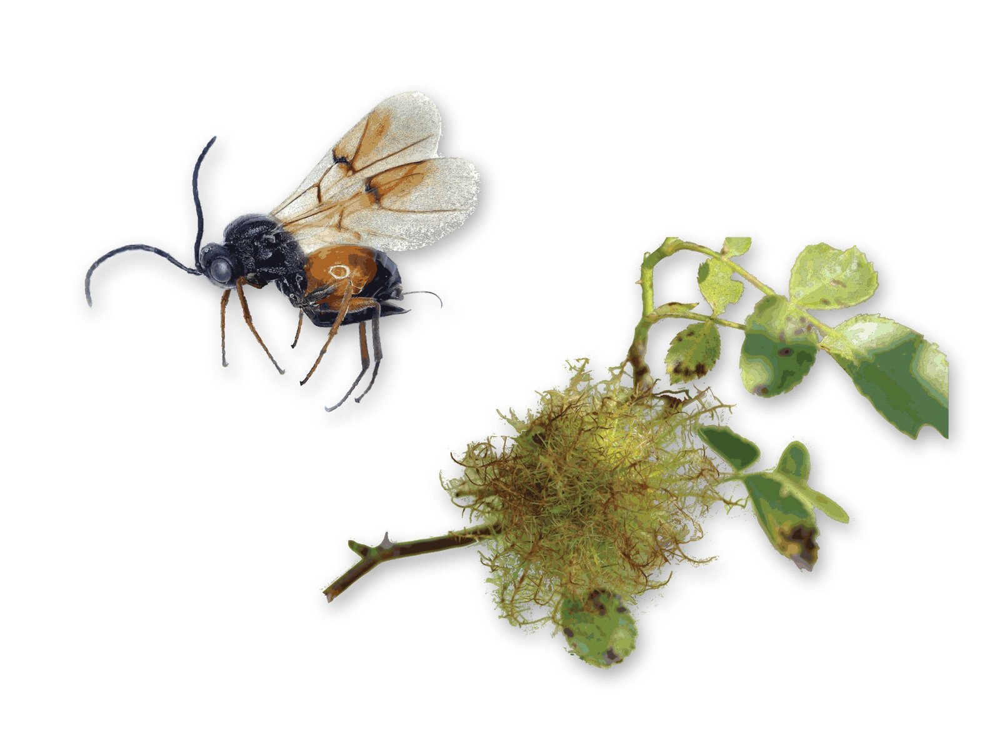
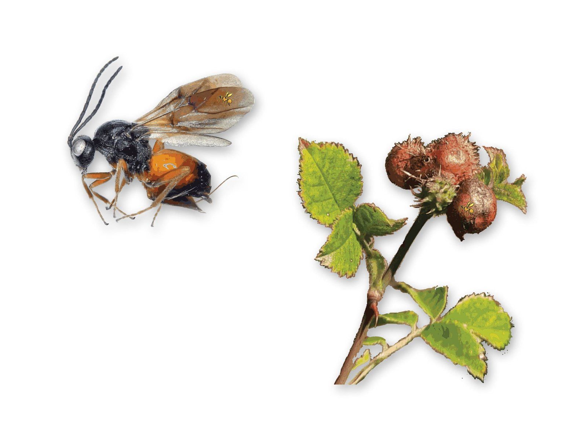
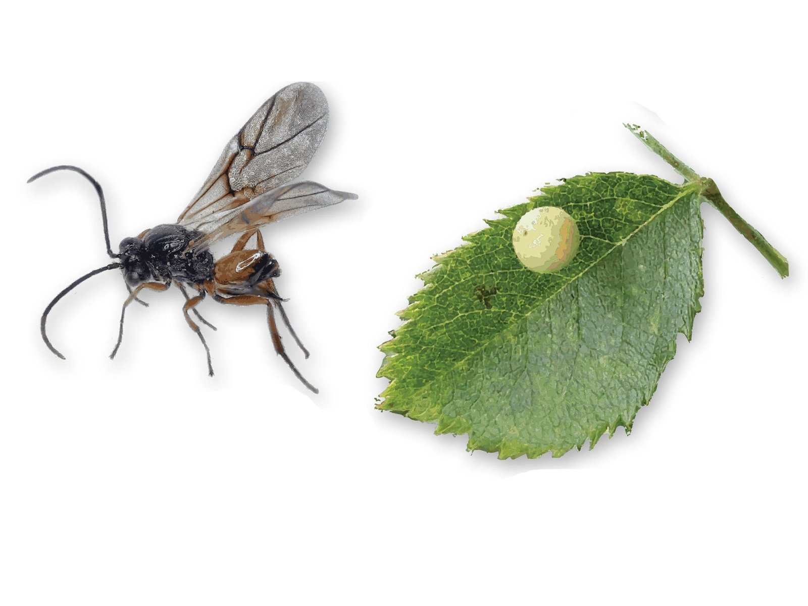
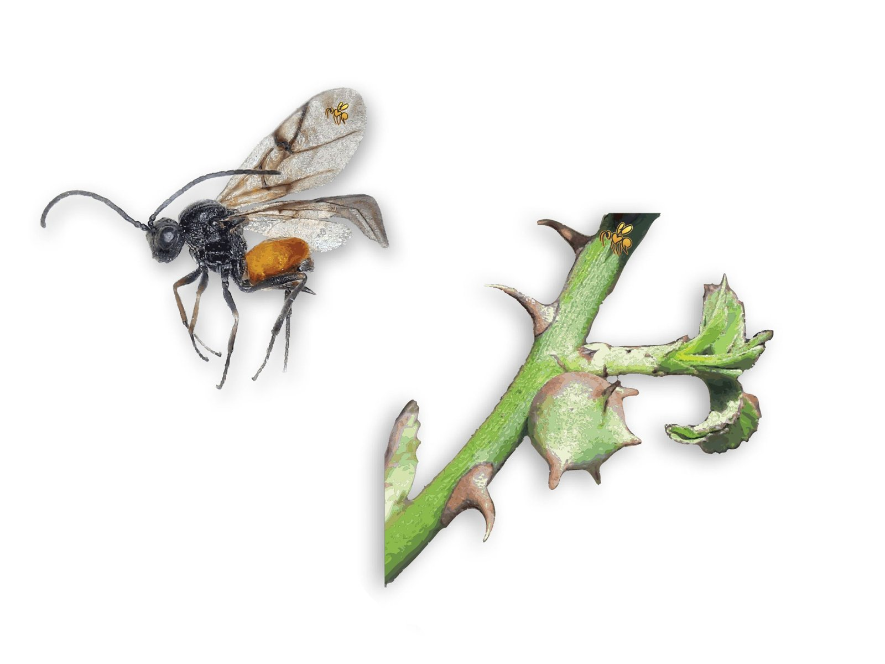

Robin's pincushion (Diplolepis rosae)

The rose bedeguar gall or robin's pincushion, is a fascinating gall-forming wasp species found on wild roses across Europe and parts of Asia. These tiny insects induce striking, spongy galls on the stems of wild roses. The galls, resembling miniature pincushions, are created as a protective habitat for developing wasp larvae. Despite their unusual appearance, rose bedeguar galls have a rich cultural history and have been used in traditional medicine and folklore for their purported medicinal properties. This species' intricate life cycle, involving both the gall-forming wasp and the wild rose host, underscores the complexity of plant-insect interactions in natural ecosystems.
Mayr's rose gall wasp (Diplolepis mayri)

It is a species of gall-forming wasp, known for its fascinating interactions with wild roses in Europe and parts of Asia. These tiny insects induce distinctive, compact galls on the stems of wild rose plants, providing a protective environment for their developing larvae. Despite their small size, Diplolepis mayri galls play significant roles in the ecology of wild rose communities, influencing plant growth and interactions with other organisms. This species' life cycle involves intricate relationships with its wild rose hosts, highlighting the interconnectedness of species within natural ecosystems. plant-insect relationships in natural environments.
Smooth pea gall wasp (Diplolepis eglanteriae)

The eglantine rose gall wasp is a species of gall wasp whose female lays her eggs on the stems of wild roses during the spring. As the eggs hatch, the larvae begin to feed on the plant tissue, secreting chemicals that stimulate the growth of abnormal tissue known as galls. Their galls, appear as spherical, unichambered structures on the leaves of the rose plant. Despite the apparent damage caused by the formation of galls, it is not considered a significant threat to the overall health of rose plants. In fact, the presence of these galls can often be seen as a natural and fascinating phenomenon, adding an intriguing element to the ecology of wild rose habitats.
Sputnik gall wasp (Diplolepis nervosa)

"Sputnik gall" refers to the characteristic appearance of these galls, resembling the shape of the satellite Sputnik. The galls appear to detach from the leaves before leaf fall and will lie in the leaf litter until the grub pupates and emerges as the small adult wasp. The gall is known in two variants, one of which is difficult or impossible to distinguish from the smooth pea gall, as no spikes can be observed on the galls; however, slight protrusions and veins can be observed on the surface of these galls. Before, this variant was also known as Diplolepis centifoliae, but it has since been included in the Sputnik gall.
Rose galler videos: